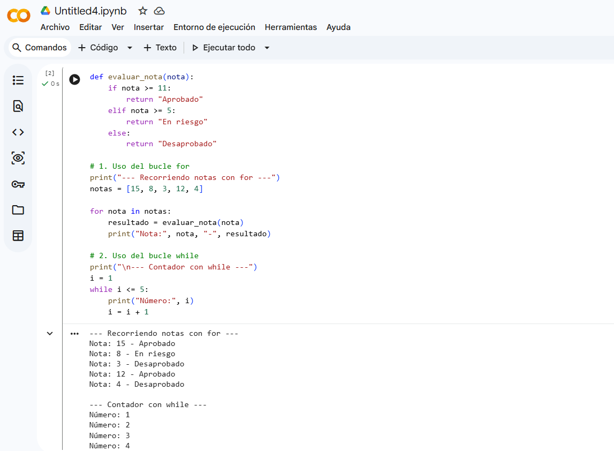

De la lógica al programa
Después de diseñar el algoritmo con pseudocódigo o diagrama de flujo, se escribe en un lenguaje de programación. Python es un lenguaje sencillo de leer y por eso se usa mucho para aprender. Se puede usar en Google Colab, una página web donde se escribe y ejecuta código Python sin instalar nada.
Condicionales: if, elif y else
Sirven para que el programa tome decisiones según una condición.
nota = 15
if nota >= 11:
print("Aprobado")
elif nota >= 5:
print("En riesgo")
else:
print("Desaprobado")Bucles: while y for
El bucle while repite mientras la condición sea verdadera:
contador = 1
while contador <= 5:
print(contador)
contador = contador + 1El bucle for repite un número de veces conocido:
for i in range(1, 6):
print(i)Funciones
Una función es un bloque de código con un nombre que se puede usar varias veces. Se crea con def, puede recibir parámetros y devuelve un valor con return.
def sumar(a, b):
resultado = a + b
return resultado
total = sumar(4, 7)
print(total)
Curso y Certificación de Python en freeCodeCamp: https://www.freecodecamp.org/espanol/learn/python-v9/
¿Quieres ver estas mismas ideas en el lenguaje de las páginas web? Mira la página de JavaScript.